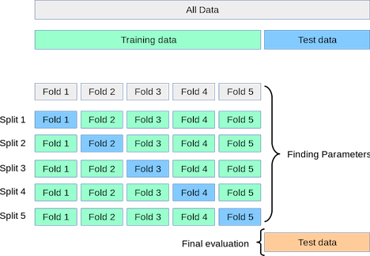

5. Regularization Example: King County housing#
import pandas as pd
pd.set_option('display.float_format', '{:.2f}'.format)
pd.set_option('display.max_colwidth', 15)
pd.options.display.max_colwidth = 15
import numpy as np
import matplotlib.pyplot as plt
housing_df = pd.read_csv('https://raw.githubusercontent.com/GettysburgDataScience/datasets/refs/heads/main/kc_house_data.csv')
housing_df.info()
<class 'pandas.core.frame.DataFrame'>
RangeIndex: 21613 entries, 0 to 21612
Data columns (total 21 columns):
# Column Non-Null Count Dtype
--- ------ -------------- -----
0 id 21613 non-null int64
1 date 21613 non-null object
2 price 21613 non-null float64
3 bedrooms 21613 non-null int64
4 bathrooms 21613 non-null float64
5 sqft_living 21613 non-null int64
6 sqft_lot 21613 non-null int64
7 floors 21613 non-null float64
8 waterfront 21613 non-null int64
9 view 21613 non-null int64
10 condition 21613 non-null int64
11 grade 21613 non-null int64
12 sqft_above 21613 non-null int64
13 sqft_basement 21613 non-null int64
14 yr_built 21613 non-null int64
15 yr_renovated 21613 non-null int64
16 zipcode 21613 non-null int64
17 lat 21613 non-null float64
18 long 21613 non-null float64
19 sqft_living15 21613 non-null int64
20 sqft_lot15 21613 non-null int64
dtypes: float64(5), int64(15), object(1)
memory usage: 3.5+ MB
housing_df.describe()
| id | price | bedrooms | bathrooms | sqft_living | sqft_lot | floors | waterfront | view | condition | grade | sqft_above | sqft_basement | yr_built | yr_renovated | zipcode | lat | long | sqft_living15 | sqft_lot15 | |
|---|---|---|---|---|---|---|---|---|---|---|---|---|---|---|---|---|---|---|---|---|
| count | 21613.00 | 21613.00 | 21613.00 | 21613.00 | 21613.00 | 21613.00 | 21613.00 | 21613.00 | 21613.00 | 21613.00 | 21613.00 | 21613.00 | 21613.00 | 21613.00 | 21613.00 | 21613.00 | 21613.00 | 21613.00 | 21613.00 | 21613.00 |
| mean | 4580301520.86 | 540088.14 | 3.37 | 2.11 | 2079.90 | 15106.97 | 1.49 | 0.01 | 0.23 | 3.41 | 7.66 | 1788.39 | 291.51 | 1971.01 | 84.40 | 98077.94 | 47.56 | -122.21 | 1986.55 | 12768.46 |
| std | 2876565571.31 | 367127.20 | 0.93 | 0.77 | 918.44 | 41420.51 | 0.54 | 0.09 | 0.77 | 0.65 | 1.18 | 828.09 | 442.58 | 29.37 | 401.68 | 53.51 | 0.14 | 0.14 | 685.39 | 27304.18 |
| min | 1000102.00 | 75000.00 | 0.00 | 0.00 | 290.00 | 520.00 | 1.00 | 0.00 | 0.00 | 1.00 | 1.00 | 290.00 | 0.00 | 1900.00 | 0.00 | 98001.00 | 47.16 | -122.52 | 399.00 | 651.00 |
| 25% | 2123049194.00 | 321950.00 | 3.00 | 1.75 | 1427.00 | 5040.00 | 1.00 | 0.00 | 0.00 | 3.00 | 7.00 | 1190.00 | 0.00 | 1951.00 | 0.00 | 98033.00 | 47.47 | -122.33 | 1490.00 | 5100.00 |
| 50% | 3904930410.00 | 450000.00 | 3.00 | 2.25 | 1910.00 | 7618.00 | 1.50 | 0.00 | 0.00 | 3.00 | 7.00 | 1560.00 | 0.00 | 1975.00 | 0.00 | 98065.00 | 47.57 | -122.23 | 1840.00 | 7620.00 |
| 75% | 7308900445.00 | 645000.00 | 4.00 | 2.50 | 2550.00 | 10688.00 | 2.00 | 0.00 | 0.00 | 4.00 | 8.00 | 2210.00 | 560.00 | 1997.00 | 0.00 | 98118.00 | 47.68 | -122.12 | 2360.00 | 10083.00 |
| max | 9900000190.00 | 7700000.00 | 33.00 | 8.00 | 13540.00 | 1651359.00 | 3.50 | 1.00 | 4.00 | 5.00 | 13.00 | 9410.00 | 4820.00 | 2015.00 | 2015.00 | 98199.00 | 47.78 | -121.31 | 6210.00 | 871200.00 |
housing_df['price'].hist(bins=100)
plt.xlabel('Price ($)')
Text(0.5, 0, 'Price ($)')
housing_df = housing_df.query('bedrooms <= 8')
np.sort(housing_df['yr_renovated'].unique())
array([ 0, 1934, 1940, 1944, 1945, 1946, 1948, 1950, 1951, 1953, 1954,
1955, 1956, 1957, 1958, 1959, 1960, 1962, 1963, 1964, 1965, 1967,
1968, 1969, 1970, 1971, 1972, 1973, 1974, 1975, 1976, 1977, 1978,
1979, 1980, 1981, 1982, 1983, 1984, 1985, 1986, 1987, 1988, 1989,
1990, 1991, 1992, 1993, 1994, 1995, 1996, 1997, 1998, 1999, 2000,
2001, 2002, 2003, 2004, 2005, 2006, 2007, 2008, 2009, 2010, 2011,
2012, 2013, 2014, 2015])
housing_df.loc[housing_df['yr_renovated']==0, 'yr_renovated'] = housing_df.loc[housing_df['yr_renovated']==0, 'yr_built']
np.sort(housing_df['yr_built'].unique())
array([1900, 1901, 1902, 1903, 1904, 1905, 1906, 1907, 1908, 1909, 1910,
1911, 1912, 1913, 1914, 1915, 1916, 1917, 1918, 1919, 1920, 1921,
1922, 1923, 1924, 1925, 1926, 1927, 1928, 1929, 1930, 1931, 1932,
1933, 1934, 1935, 1936, 1937, 1938, 1939, 1940, 1941, 1942, 1943,
1944, 1945, 1946, 1947, 1948, 1949, 1950, 1951, 1952, 1953, 1954,
1955, 1956, 1957, 1958, 1959, 1960, 1961, 1962, 1963, 1964, 1965,
1966, 1967, 1968, 1969, 1970, 1971, 1972, 1973, 1974, 1975, 1976,
1977, 1978, 1979, 1980, 1981, 1982, 1983, 1984, 1985, 1986, 1987,
1988, 1989, 1990, 1991, 1992, 1993, 1994, 1995, 1996, 1997, 1998,
1999, 2000, 2001, 2002, 2003, 2004, 2005, 2006, 2007, 2008, 2009,
2010, 2011, 2012, 2013, 2014, 2015])
housing_df['yr_sold'] = housing_df['date'].apply(lambda d: int(d[0:4]))
housing_df['age_built'] = housing_df['yr_sold'] - housing_df['yr_built']
housing_df['age_reno'] = housing_df['yr_sold'] - housing_df['yr_renovated']
columns_to_drop = ['id','date', 'zipcode', 'yr_built', 'yr_renovated']
housing_df.drop(columns = columns_to_drop, inplace=True)
target = ['price']
y = housing_df[target]
X = housing_df.drop(columns = target)
from sklearn.model_selection import train_test_split
from sklearn.preprocessing import StandardScaler
from sklearn.linear_model import LinearRegression, Ridge, Lasso, ElasticNet, RidgeCV, LassoCV, ElasticNetCV
from sklearn.metrics import mean_squared_error, r2_score
import warnings
warnings.filterwarnings("ignore")
# Split data into training and testing
X_train, X_test, y_train, y_test = train_test_split(X, y, test_size=0.5, random_state=42)
# Scale features
ss = StandardScaler()
X_train_scaled = ss.fit_transform(X_train)
X_test_scaled = ss.transform(X_test)
ss_y = StandardScaler()
y_train_scaled = ss_y.fit_transform(y_train)
y_test_scaled = ss_y.transform(y_test)
# Linear Regression
lr = LinearRegression()
lr.fit(X_train_scaled, y_train_scaled)
y_pred_lr_scaled = lr.predict(X_test_scaled)
y_pred_lr = ss_y.inverse_transform(y_pred_lr_scaled)
R2_lr = r2_score(y_test_scaled, y_pred_lr_scaled)
R2_lr
0.6956974268521209
np.logspace(0, 5, 6)
array([1.e+00, 1.e+01, 1.e+02, 1.e+03, 1.e+04, 1.e+05])
alpha_values = np.logspace(-4,3, 8)
ridge_dict = {}
lasso_dict = {}
elastic_dict = {}
R2_dict = {'alpha': alpha_values,
'ridge':[],
'lasso':[],
'elastic':[]}
for a in alpha_values:
# Ridge Regression
ridge = Ridge(alpha=a)
ridge.fit(X_train_scaled, y_train_scaled)
y_pred_ridge_scaled = ridge.predict(X_test_scaled)
y_pred_ridge = ss_y.inverse_transform(y_pred_ridge_scaled.reshape(-1,1))
R2_ridge = r2_score(y_test_scaled, y_pred_ridge_scaled)
R2_dict['ridge'].append(R2_ridge)
ridge_coef = list(ridge.coef_.flatten().round(2))
ridge_coef.sort(key = abs, reverse=True)
ridge_dict[f'alpha_{a:.1e}'] = ridge_coef
# Lasso Regression
lasso = Lasso(alpha=a)
lasso.fit(X_train_scaled, y_train_scaled)
y_pred_lasso_scaled = lasso.predict(X_test_scaled)
y_pred_lasso = ss_y.inverse_transform(y_pred_lasso_scaled.reshape(-1,1))
R2_lasso = r2_score(y_test_scaled, y_pred_lasso_scaled)
R2_dict['lasso'].append(R2_lasso)
lasso_coef = list(lasso.coef_.flatten().round(2))
lasso_coef.sort(key = abs, reverse=True)
lasso_dict[f'alpha_{a: .1e}'] = lasso_coef
# ElasticNet Regression
elastic = ElasticNet(alpha=a, l1_ratio=0.5)
elastic.fit(X_train_scaled, y_train_scaled)
y_pred_elastic_scaled = elastic.predict(X_test_scaled)
y_pred_elastic = ss_y.inverse_transform(y_pred_elastic_scaled.reshape(-1,1))
R2_elastic = r2_score(y_test_scaled, y_pred_elastic_scaled)
R2_dict['elastic'].append(R2_elastic)
elastic_coef = list(elastic.coef_.flatten().round(2))
elastic_coef.sort(key = abs, reverse=True)
elastic_dict[f'alpha_{a: .1e}'] = elastic_coef
ridge_df = pd.DataFrame(ridge_dict)
lasso_df = pd.DataFrame(lasso_dict)
elastic_df = pd.DataFrame(elastic_dict)
R2_dict = pd.DataFrame(R2_dict)
display(R2_dict)
print('Ridge Regression')
display(ridge_df)
print('Lasso Regression')
display(lasso_df)
print('ElasticNet Regression')
display(elastic_df)
| alpha | ridge | lasso | elastic | |
|---|---|---|---|---|
| 0 | 0.00 | 0.70 | 0.70 | 0.70 |
| 1 | 0.00 | 0.70 | 0.70 | 0.70 |
| 2 | 0.01 | 0.70 | 0.69 | 0.69 |
| 3 | 0.10 | 0.70 | 0.63 | 0.67 |
| 4 | 1.00 | 0.70 | -0.00 | 0.19 |
| 5 | 10.00 | 0.70 | -0.00 | -0.00 |
| 6 | 100.00 | 0.70 | -0.00 | -0.00 |
| 7 | 1000.00 | 0.69 | -0.00 | -0.00 |
Ridge Regression
| alpha_1.0e-04 | alpha_1.0e-03 | alpha_1.0e-02 | alpha_1.0e-01 | alpha_1.0e+00 | alpha_1.0e+01 | alpha_1.0e+02 | alpha_1.0e+03 | |
|---|---|---|---|---|---|---|---|---|
| 0 | 0.33 | 0.33 | 0.33 | 0.33 | 0.33 | 0.33 | 0.33 | 0.29 |
| 1 | 0.25 | 0.25 | 0.25 | 0.25 | 0.25 | 0.25 | 0.24 | 0.20 |
| 2 | 0.21 | 0.21 | 0.21 | 0.21 | 0.21 | 0.21 | 0.21 | 0.20 |
| 3 | 0.21 | 0.21 | 0.21 | 0.21 | 0.21 | 0.21 | 0.21 | 0.17 |
| 4 | 0.19 | 0.19 | 0.19 | 0.19 | 0.19 | 0.19 | 0.19 | 0.17 |
| 5 | 0.14 | 0.14 | 0.14 | 0.14 | 0.14 | 0.14 | 0.14 | 0.13 |
| 6 | 0.11 | 0.11 | 0.11 | 0.11 | 0.11 | 0.11 | 0.11 | 0.11 |
| 7 | -0.09 | -0.09 | -0.09 | -0.09 | -0.09 | -0.09 | 0.10 | 0.10 |
| 8 | 0.09 | 0.09 | 0.09 | 0.09 | 0.09 | 0.09 | -0.09 | 0.08 |
| 9 | 0.08 | 0.08 | 0.08 | 0.08 | 0.08 | 0.08 | 0.08 | -0.07 |
| 10 | 0.05 | 0.05 | 0.05 | 0.05 | 0.05 | 0.05 | 0.05 | 0.07 |
| 11 | 0.04 | 0.04 | 0.04 | 0.04 | 0.04 | 0.04 | 0.05 | 0.05 |
| 12 | -0.04 | -0.04 | -0.04 | -0.04 | -0.04 | -0.04 | -0.03 | -0.04 |
| 13 | -0.03 | -0.03 | -0.03 | -0.03 | -0.03 | -0.03 | -0.03 | 0.03 |
| 14 | -0.03 | -0.03 | -0.03 | -0.03 | -0.03 | -0.03 | 0.03 | 0.02 |
| 15 | 0.03 | 0.03 | 0.03 | 0.03 | 0.03 | 0.03 | -0.03 | -0.02 |
| 16 | 0.01 | 0.01 | 0.01 | 0.01 | 0.01 | 0.01 | 0.01 | 0.02 |
| 17 | 0.00 | 0.00 | 0.00 | 0.00 | 0.00 | 0.00 | 0.00 | 0.01 |
Lasso Regression
| alpha_ 1.0e-04 | alpha_ 1.0e-03 | alpha_ 1.0e-02 | alpha_ 1.0e-01 | alpha_ 1.0e+00 | alpha_ 1.0e+01 | alpha_ 1.0e+02 | alpha_ 1.0e+03 | |
|---|---|---|---|---|---|---|---|---|
| 0 | 0.48 | 0.38 | 0.38 | 0.37 | 0.00 | 0.00 | 0.00 | 0.00 |
| 1 | 0.33 | 0.34 | 0.34 | 0.26 | 0.00 | 0.00 | 0.00 | 0.00 |
| 2 | 0.25 | 0.24 | 0.20 | 0.15 | 0.00 | 0.00 | 0.00 | 0.00 |
| 3 | 0.21 | 0.21 | 0.20 | 0.11 | 0.00 | 0.00 | 0.00 | 0.00 |
| 4 | 0.14 | 0.14 | 0.13 | 0.07 | 0.00 | 0.00 | 0.00 | 0.00 |
| 5 | 0.11 | 0.11 | 0.11 | 0.05 | 0.00 | 0.00 | 0.00 | 0.00 |
| 6 | -0.09 | -0.09 | 0.08 | -0.00 | 0.00 | 0.00 | 0.00 | 0.00 |
| 7 | 0.09 | 0.09 | -0.06 | 0.00 | 0.00 | 0.00 | 0.00 | 0.00 |
| 8 | 0.05 | 0.05 | 0.04 | -0.00 | 0.00 | 0.00 | 0.00 | 0.00 |
| 9 | -0.05 | 0.04 | 0.03 | 0.00 | 0.00 | 0.00 | 0.00 | 0.00 |
| 10 | -0.04 | 0.04 | 0.02 | 0.00 | 0.00 | 0.00 | 0.00 | 0.00 |
| 11 | 0.04 | -0.03 | -0.02 | 0.00 | 0.00 | 0.00 | 0.00 | 0.00 |
| 12 | -0.04 | 0.03 | 0.02 | 0.00 | 0.00 | 0.00 | 0.00 | 0.00 |
| 13 | -0.03 | -0.03 | -0.01 | -0.00 | 0.00 | 0.00 | 0.00 | 0.00 |
| 14 | -0.03 | -0.02 | -0.00 | 0.00 | 0.00 | 0.00 | 0.00 | 0.00 |
| 15 | 0.03 | 0.01 | 0.00 | -0.00 | 0.00 | 0.00 | 0.00 | 0.00 |
| 16 | 0.01 | 0.00 | 0.00 | 0.00 | -0.00 | -0.00 | -0.00 | -0.00 |
| 17 | 0.00 | 0.00 | 0.00 | 0.00 | -0.00 | -0.00 | -0.00 | -0.00 |
ElasticNet Regression
| alpha_ 1.0e-04 | alpha_ 1.0e-03 | alpha_ 1.0e-02 | alpha_ 1.0e-01 | alpha_ 1.0e+00 | alpha_ 1.0e+01 | alpha_ 1.0e+02 | alpha_ 1.0e+03 | |
|---|---|---|---|---|---|---|---|---|
| 0 | 0.55 | 0.38 | 0.37 | 0.34 | 0.10 | 0.00 | 0.00 | 0.00 |
| 1 | 0.33 | 0.33 | 0.33 | 0.30 | 0.06 | 0.00 | 0.00 | 0.00 |
| 2 | 0.25 | 0.24 | 0.21 | 0.18 | 0.00 | 0.00 | 0.00 | 0.00 |
| 3 | 0.21 | 0.21 | 0.20 | 0.12 | 0.00 | 0.00 | 0.00 | 0.00 |
| 4 | 0.14 | 0.14 | 0.13 | 0.12 | 0.00 | 0.00 | 0.00 | 0.00 |
| 5 | 0.11 | 0.11 | 0.11 | 0.10 | 0.00 | 0.00 | 0.00 | 0.00 |
| 6 | -0.11 | -0.09 | 0.09 | 0.03 | 0.00 | 0.00 | 0.00 | 0.00 |
| 7 | -0.09 | 0.09 | -0.08 | 0.03 | 0.00 | 0.00 | 0.00 | 0.00 |
| 8 | 0.09 | 0.05 | 0.04 | 0.01 | 0.00 | 0.00 | 0.00 | 0.00 |
| 9 | -0.08 | 0.04 | 0.04 | 0.01 | 0.00 | 0.00 | 0.00 | 0.00 |
| 10 | 0.05 | 0.04 | 0.04 | -0.00 | 0.00 | 0.00 | 0.00 | 0.00 |
| 11 | 0.04 | -0.04 | -0.03 | -0.00 | 0.00 | 0.00 | 0.00 | 0.00 |
| 12 | -0.04 | -0.03 | 0.03 | 0.00 | -0.00 | 0.00 | 0.00 | 0.00 |
| 13 | -0.03 | 0.03 | -0.02 | 0.00 | 0.00 | 0.00 | 0.00 | 0.00 |
| 14 | -0.03 | -0.02 | -0.00 | -0.00 | 0.00 | 0.00 | 0.00 | 0.00 |
| 15 | 0.03 | 0.01 | 0.00 | -0.00 | 0.00 | 0.00 | 0.00 | 0.00 |
| 16 | 0.01 | 0.00 | 0.00 | 0.00 | 0.00 | -0.00 | -0.00 | -0.00 |
| 17 | 0.00 | 0.00 | -0.00 | 0.00 | -0.00 | -0.00 | -0.00 | -0.00 |
5.1. Choosing the best models#
# Ridge
ridge = Ridge(alpha=100)
ridge.fit(X_train_scaled, y_train_scaled)
y_pred_ridge_scaled = ridge.predict(X_test_scaled)
y_pred_ridge = ss_y.inverse_transform(y_pred_ridge_scaled.reshape(-1,1))
R2_ridge = r2_score(y_test_scaled, y_pred_ridge_scaled)
# Lasso
lasso = Lasso(alpha=0.1)
lasso.fit(X_train_scaled, y_train_scaled)
y_pred_lasso_scaled = lasso.predict(X_test_scaled)
y_pred_lasso = ss_y.inverse_transform(y_pred_lasso_scaled.reshape(-1,1))
R2_lasso = r2_score(y_test_scaled, y_pred_lasso_scaled)
# ElasticNet
elastic = ElasticNet(alpha=0.1, l1_ratio=0.5)
elastic.fit(X_train_scaled, y_train_scaled)
y_pred_elastic_scaled = elastic.predict(X_test_scaled)
y_pred_elastic = ss_y.inverse_transform(y_pred_elastic_scaled.reshape(-1,1))
R2_elastic = r2_score(y_test_scaled, y_pred_elastic_scaled)
fig, ax = plt.subplots(1,4, figsize = (20,4), sharex=True, sharey=True)
model_names = ['Linear Regression', 'Ridge', 'Lasso', 'ElasticNet']
model_predictions = [y_pred_lr, y_pred_ridge, y_pred_lasso, y_pred_elastic]
R2 = [R2_lr, R2_ridge, R2_lasso, R2_elastic]
for k, (mod, pred, R) in enumerate(zip(model_names, model_predictions, R2)):
ax[k].scatter(y_test, pred, s = 5, alpha = 0.1)
ax[k].plot([0,4000000], [0, 4000000], 'k--')
ax[k].set_title(mod)
ax[k].set_xlabel('Actual Selling Price ($)')
ax[k].text(0.05, 0.9, f'R2 = {R:.3f}', transform=ax[k].transAxes)
if k == 0:
ax[k].set_ylabel('Predicted Price ($)')
plt.show()
5.2. Hyper-parameter Search and Validation#
5.2.1. Grid Search#
How do we explore this space? Suppose I want to try trees with these options:
alpha = [0.01, 0.1, 1, 10]
l1_ratio= [0.25, 0.5, 0.75]
How many models will I be testing?
GridSearch does just this in an automated way, testing every combination from the parameters you’d like to test.
alpha |
l1_ratio |
Cartesian Product |
|---|---|---|
0.01 |
0.25 |
(0.01, 0.25) |
0.01 |
0.50 |
(0.01, 0.50) |
0.01 |
0.75 |
(0.01, 0.75) |
0.1 |
0.25 |
(0.1, 0.25) |
0.1 |
0.50 |
(0.1, 0.50) |
0.1 |
0.75 |
(0.1, 0.75) |
1. |
0.25 |
(1, 0.25) |
1. |
0.50 |
(1, 0.50) |
1. |
0.75 |
(1, 0.75) |
10 |
0.25 |
(10, 0.25) |
10 |
0.50 |
(10, 0.50) |
10 |
0.75 |
(10, 0.75) |
5.2.2. Cross-Validation#
Validation is used to select from a set of candidate models (e.g. different learning algorithms, variations on the same algorithm with different hyperparameters). In the simplest form of validation, we split off a portion of the training data and compare models based on their performance on this validation set. But more commonly, we use K-fold Cross-Validation:

Split the training data into K “folds”
Set the first fold aside as a validation set and train on the remaining data.
Validate using that first fold as a validation set.
Repeat the process (K times in total), each time using a different fold as the validation set.
Average the performance across all the training-validation iterations.
5.2.3. Grid Search + Cross-Validation#
Grid Search and Cross-Validation are used in tandem so commonly that sklearn packages them together in some very convenient functions.
# RidgeCV
ridge = RidgeCV(alphas=np.logspace(-3, 3, 7), cv=5)
ridge.fit(X_train_scaled, y_train_scaled)
y_pred_ridge = ridge.predict(X_test_scaled)
y_train_ridge = ridge.predict(X_train_scaled)
# LassoCV
lasso = LassoCV(alphas=np.logspace(-3, 3, 7), cv=5, max_iter=10000)
lasso.fit(X_train_scaled, y_train_scaled)
y_pred_lasso = lasso.predict(X_test_scaled)
y_train_lasso = lasso.predict(X_train_scaled)
# ElasticNetCV
elastic = ElasticNetCV(alphas=np.logspace(-3, 3, 7), l1_ratio=[.1, .5, .7, .9, .95, .99, 1], cv=5, max_iter=10000)
elastic.fit(X_train_scaled, y_train_scaled)
y_pred_elastic = elastic.predict(X_test_scaled)
y_train_elastic = elastic.predict(X_train_scaled)
lasso.__dict__
{'eps': 0.001,
'n_alphas': 100,
'alphas': array([1.e-03, 1.e-02, 1.e-01, 1.e+00, 1.e+01, 1.e+02, 1.e+03]),
'fit_intercept': True,
'precompute': 'auto',
'max_iter': 10000,
'tol': 0.0001,
'copy_X': True,
'cv': 5,
'verbose': False,
'n_jobs': None,
'positive': False,
'random_state': None,
'selection': 'cyclic',
'n_features_in_': 18,
'mse_path_': array([[1.17493944, 1.08348981, 0.91379629, 0.94334548, 0.88546225],
[1.17493944, 1.08348981, 0.91379629, 0.94334548, 0.88546225],
[1.17493944, 1.08348981, 0.91379629, 0.94334548, 0.88546225],
[1.17493944, 1.08348981, 0.91379629, 0.94334548, 0.88546225],
[0.47139429, 0.39173577, 0.31993276, 0.3258653 , 0.31450938],
[0.391673 , 0.31529641, 0.27752907, 0.27940606, 0.27739959],
[0.38621254, 0.31204547, 0.27755557, 0.27871435, 0.27824047]]),
'alpha_': np.float64(0.001),
'alphas_': array([1.e+03, 1.e+02, 1.e+01, 1.e+00, 1.e-01, 1.e-02, 1.e-03]),
'coef_': array([-0.08903972, 0.09425803, 0.38298852, 0.00168326, 0.00694186,
0.13634189, 0.11170771, 0.05152892, 0.33509464, 0.03526533,
0. , 0.20924649, -0.02938209, 0.03984716, -0.02259535,
0.03311764, 0.2397004 , -0.03350463]),
'intercept_': np.float64(-2.1721301169984707e-15),
'dual_gap_': np.float64(8.889033968068597e-05),
'n_iter_': 202}
# Vanilla linear
rmse_lr = np.sqrt(mean_squared_error(y_test, y_pred_lr))
r2_lr = r2_score(y_test, y_pred_lr)
# Ridge
rmse_ridge = np.sqrt(mean_squared_error(y_test, y_pred_ridge))
r2_ridge = r2_score(y_test, y_pred_ridge)
# Lasso
rmse_lasso = np.sqrt(mean_squared_error(y_test, y_pred_lasso))
r2_lasso = r2_score(y_test, y_pred_lasso)
# ElasticNet
rmse_elastic = np.sqrt(mean_squared_error(y_test, y_pred_elastic))
r2_elastic = r2_score(y_test, y_pred_elastic)
# Get feature names
feature_names = np.array(X_train.columns)
# Linear Regression coefficients
lr_weights = lr.coef_.flatten().round(2)
lr_idx = np.argsort(np.abs(lr_weights))[::-1]
lr_features, lr_weights = feature_names[lr_idx], lr_weights[lr_idx]
# Ridge Regression coefficients
ridge_weights = ridge.coef_.flatten().round(2)
ridge_idx = np.argsort(np.abs(ridge_weights))[::-1]
ridge_features, ridge_weights = feature_names[ridge_idx], ridge_weights[ridge_idx]
# Lasso Regression coefficients
lasso_weights = lasso.coef_.flatten().round(2)
lasso_idx = np.argsort(np.abs(lasso_weights))[::-1]
lasso_features, lasso_weights = feature_names[lasso_idx], lasso_weights[lasso_idx]
# ElasticNet Regression coefficients
elastic_weights = elastic.coef_.flatten().round(2)
elastic_idx = np.argsort(np.abs(elastic_weights))[::-1]
elastic_features, elastic_weights = feature_names[elastic_idx], elastic_weights[elastic_idx]
feature_df = pd.DataFrame({
('Linear', 'feature'): lr_features,
('Linear','weight'): lr_weights,
('Ridge','feature'): ridge_features,
('Ridge','weight'): ridge_weights,
('Lasso', 'feature'): lasso_features,
('Lasso', 'weight'): lasso_weights,
('Elastic', 'feature'): elastic_features,
('Elastic', 'weight'): elastic_weights
})
feature_df.head(200)
| Linear | Ridge | Lasso | Elastic | |||||
|---|---|---|---|---|---|---|---|---|
| feature | weight | feature | weight | feature | weight | feature | weight | |
| 0 | grade | 0.33 | grade | 0.33 | sqft_living | 0.38 | grade | 0.33 |
| 1 | age_built | 0.25 | age_built | 0.24 | grade | 0.34 | sqft_living | 0.25 |
| 2 | sqft_living | 0.21 | sqft_living | 0.21 | age_built | 0.24 | age_built | 0.25 |
| 3 | lat | 0.21 | lat | 0.21 | lat | 0.21 | lat | 0.21 |
| 4 | sqft_above | 0.19 | sqft_above | 0.19 | waterfront | 0.14 | sqft_above | 0.15 |
| 5 | waterfront | 0.14 | waterfront | 0.14 | view | 0.11 | waterfront | 0.14 |
| 6 | view | 0.11 | view | 0.11 | bathrooms | 0.09 | view | 0.11 |
| 7 | bathrooms | 0.09 | bathrooms | 0.10 | bedrooms | -0.09 | bathrooms | 0.09 |
| 8 | bedrooms | -0.09 | bedrooms | -0.09 | condition | 0.05 | bedrooms | -0.09 |
| 9 | sqft_basement | 0.08 | sqft_basement | 0.08 | sqft_above | 0.04 | sqft_basement | 0.06 |
| 10 | condition | 0.05 | condition | 0.05 | sqft_living15 | 0.04 | condition | 0.05 |
| 11 | sqft_living15 | 0.04 | sqft_living15 | 0.05 | long | -0.03 | sqft_living15 | 0.04 |
| 12 | age_reno | -0.04 | long | -0.03 | yr_sold | 0.03 | age_reno | -0.04 |
| 13 | long | -0.03 | sqft_lot15 | -0.03 | age_reno | -0.03 | long | -0.03 |
| 14 | sqft_lot15 | -0.03 | yr_sold | 0.03 | sqft_lot15 | -0.02 | sqft_lot15 | -0.03 |
| 15 | yr_sold | 0.03 | age_reno | -0.03 | floors | 0.01 | yr_sold | 0.03 |
| 16 | floors | 0.01 | floors | 0.01 | sqft_basement | 0.00 | floors | 0.01 |
| 17 | sqft_lot | 0.00 | sqft_lot | 0.00 | sqft_lot | 0.00 | sqft_lot | 0.00 |
feature_names
array(['bedrooms', 'bathrooms', 'sqft_living', 'sqft_lot', 'floors',
'waterfront', 'view', 'condition', 'grade', 'sqft_above',
'sqft_basement', 'lat', 'long', 'sqft_living15', 'sqft_lot15',
'yr_sold', 'age_built', 'age_reno'], dtype=object)